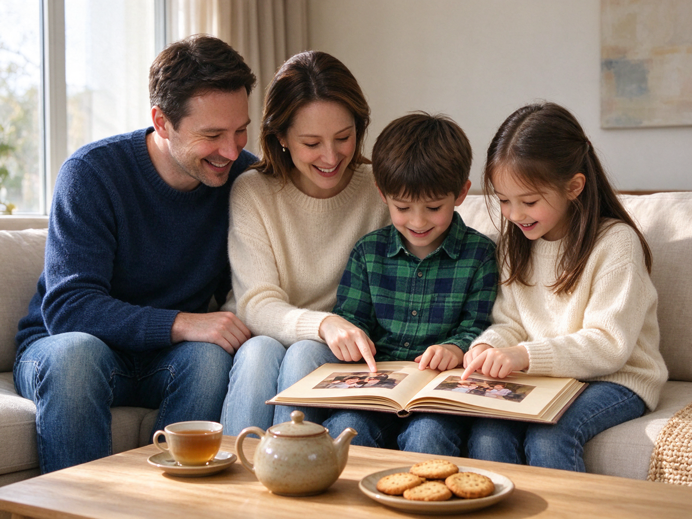

Betreff: Ihre Bestellung Nr. 48213
Sehr geehrter Herr Aksoy,
vielen Dank für Ihre Bestellung. Leider ist der Schrank, den Sie bestellt haben, im Moment nicht lieferbar. Wir erwarten neue Ware in zwei Wochen. Wenn Sie nicht so lange warten möchten, können Sie die Bestellung kostenlos stornieren. Antworten Sie dazu einfach auf diese E-Mail. Wenn Sie nichts tun, liefern wir den Schrank Anfang Dezember.
Mit freundlichen Grüßen
Ihr Möbelhaus Klein
Die Audiodatei fehlt oder kann nicht geladen werden. Sie können „Hören beenden“ klicken und trotzdem die Aufgaben ansehen.
Aufgabe 1 · Ansagen am Telefon oder per LautsprecherSie hören jeden Text einmal. Zu jedem Text gibt es eine Aufgabe.
1
Was soll man tun, wenn man zur Besichtigung kommen kann?
2
Wann kann man das Buch abholen?
3
Wo ist das Paket von Frau Nowak?
4
Was sollen die Bewohner tun?
Aufgabe 2 · Ansagen im RadioSie hören jeden Text einmal.
5
Wie wird das Wetter am Sonntag?
6
Was ist heute anders?
7
Was muss man für den Infoabend tun?
8
Was ist am Montag anders?
9
Wo fährt der Zug nach Hamburg ab?
Aufgabe 3 · GesprächeZu jedem Gespräch lösen Sie zwei Aufgaben.
Gespräch 1 · Ein Paar sucht eine Wohnung.
10
Was gefällt dem Paar an der Wohnung?
11
Das Paar braucht unbedingt eine Garage.
Gespräch 2 · Eine Mutter spricht mit der Lehrerin.
12
Was empfiehlt die Lehrerin?
13
Die Hausaufgabenhilfe kostet Geld.
Gespräch 3 · Zwei Freunde sprechen über das Wochenende.
14
Wann hilft die Frau beim Umzug?
15
Der Mann hat noch keinen Transporter.
Gespräch 4 · Eine Kundin ruft bei der Bank an.
16
Was soll die Kundin zuerst tun?
17
Die neue Karte ist kostenlos.
Aufgabe 4 · Meinungen: Arbeit: Was sagen die drei Personen über ihre Arbeit?Sie hören drei Personen.
Arbeit: Was sagen die drei Personen über ihre Arbeit?
Ordnen Sie die Aussagen den drei Personen zu. Nicht jede Aussage passt. Sie haben eine Minute Zeit zum Lesen.
- a Diese Person arbeitet nur am Wochenende.
- b Diese Person trifft bei der Arbeit viele Menschen.
- c Diese Person hat eine Arbeit mit Nachtschichten und ist zufrieden.
- d Diese Person sucht eine neue Stelle.
- e Diese Person arbeitet meistens zu Hause.
- f Diese Person verdient sehr wenig.
18
Person 1
19
Person 2
20
Person 3
Lesen
45 Min
25 Aufgaben. Die Zeit läuft erst, wenn Sie starten. Sie können auch zuerst Schreiben wählen (links).
Aufgabe 1 · Kataloge, Verzeichnisse, RubrikenLesen Sie das Verzeichnis. Wo finden Sie das? Wählen Sie die richtige Angabe.
Hofmann Baumarkt · Wegweiser
Sie sind im Baumarkt und lesen den Wegweiser am Eingang.
| Halle A | Farben und Lacke · Tapeten |
|---|---|
| Halle B | Werkzeug · Schrauben und Nägel |
| Halle C | Bad und Sanitär · Fliesen |
| Gartencenter | Gartengeräte · Blumenerde · Gartenschläuche |
| Obergeschoss | Lampen und Leuchtmittel · Steckdosen |
1
Sie möchten die Wand im Kinderzimmer weiß streichen.
2
Sie brauchen einen Hammer und Nägel.
3
Der Wasserhahn in der Dusche ist kaputt. Sie brauchen einen neuen.
4
Sie wollen Ihre Blumen im Garten gießen und brauchen einen Schlauch.
5
Die Lampe im Flur braucht eine neue Glühbirne.
Aufgabe 2 · AnzeigenLesen Sie die Anzeigen und ordnen Sie zu.
Welche Anzeige passt zu welcher Situation? Eine Situation hat keine passende Anzeige: Wählen Sie dann x.
a Gebrauchte Kindermöbel zu verkaufen: Bett, Schrank, Schreibtisch. Alles zusammen 150 €. Selbstabholung. Tel. 0151 77665
b Nähkurs für Anfänger. Samstags 10–13 Uhr. Material wird gestellt. Frauenzentrum Nord, Anmeldung bis 10.12.
c Schnelle Hilfe bei Computerproblemen! Wir kommen zu Ihnen nach Hause. 30 € pro Stunde. Tel. 0241 909090
d Gesucht: Reinigungskraft für Büro, 3 Abende pro Woche, 18–21 Uhr. Bewerbung per E-Mail an reinigung@clean.example
e Tanzabend für alle! Freitag, 20 Uhr, Gemeindehaus. Eintritt 5 €. Live-Musik.
f Sprachcafé: Treffen Sie Menschen aus aller Welt und üben Sie Deutsch. Mittwochs 17 Uhr, Kulturzentrum. Kostenlos.
g Umschulung zum Pflegeassistenten. Beginn im Januar. Beratung kostenlos unter 0800 123 456.
h Reisebüro Sonne: Last-Minute nach Spanien ab 199 €. Nur diese Woche!
6
Ihr Computer startet nicht mehr. Sie möchten, dass jemand zu Ihnen kommt.
7
Sie suchen eine Arbeit für die Abendstunden.
8
Sie möchten Deutsch üben und neue Leute kennenlernen.
9
Sie brauchen ein günstiges Kinderbett.
10
Sie suchen einen Kurs, in dem man Gitarre spielen lernt.
Aufgabe 3 · Presse und formelle MitteilungenLesen Sie die Texte und lösen Sie die Aufgaben.
11
Was muss Herr Aksoy tun, wenn er den Schrank nicht mehr will?
12
Das Möbelhaus liefert den Schrank sofort.
Sprachkurs im Wohnzimmer
In Aachen treffen sich jeden Dienstag zehn Frauen bei Frau Dogan zum Deutschlernen. Eine pensionierte Lehrerin leitet den Kurs ehrenamtlich. Die Teilnehmerinnen kommen aus fünf Ländern und haben kleine Kinder. Die Kinder spielen im Nebenzimmer. Der Kurs ist kostenlos, nur für Kaffee und Kuchen sammeln die Frauen jede Woche zwei Euro. Neue Teilnehmerinnen sind willkommen.
In Aachen treffen sich jeden Dienstag zehn Frauen bei Frau Dogan zum Deutschlernen. Eine pensionierte Lehrerin leitet den Kurs ehrenamtlich. Die Teilnehmerinnen kommen aus fünf Ländern und haben kleine Kinder. Die Kinder spielen im Nebenzimmer. Der Kurs ist kostenlos, nur für Kaffee und Kuchen sammeln die Frauen jede Woche zwei Euro. Neue Teilnehmerinnen sind willkommen.
13
Was kostet der Kurs?
14
Die Kinder dürfen bei den Frauen im Kurs sitzen.
Wichtige Information zur Müllabfuhr
Ab Januar ändern sich die Abholtage. Der Restmüll wird nicht mehr donnerstags, sondern montags abgeholt. Die Biotonne wird weiterhin jeden zweiten Mittwoch geleert. Den gelben Sack stellen Sie bitte schon am Abend vorher an die Straße. Den neuen Abfallkalender finden Sie im Internet oder im Rathaus.
Ab Januar ändern sich die Abholtage. Der Restmüll wird nicht mehr donnerstags, sondern montags abgeholt. Die Biotonne wird weiterhin jeden zweiten Mittwoch geleert. Den gelben Sack stellen Sie bitte schon am Abend vorher an die Straße. Den neuen Abfallkalender finden Sie im Internet oder im Rathaus.
15
Wann wird der Restmüll ab Januar abgeholt?
16
Der Abfallkalender ist nur im Rathaus erhältlich.
Aufgabe 4 · InformationsbroschüreSind die Aussagen richtig oder falsch?
Wichtige Hinweise zur Teilnahme an der Erste-Hilfe-Schulung
Die Schulung dauert zwei Tage, jeweils von 9 bis 16 Uhr. Bitte bringen Sie Ihr Mittagessen selbst mit, es gibt nur Getränke. Die Teilnahmegebühr von 45 Euro zahlen Sie bar am ersten Tag. Wer zur Schulung nicht kommen kann, muss spätestens drei Tage vorher absagen, sonst muss er die Gebühr trotzdem bezahlen. Eine Bescheinigung erhalten Sie am Ende des zweiten Tages.
Die Schulung dauert zwei Tage, jeweils von 9 bis 16 Uhr. Bitte bringen Sie Ihr Mittagessen selbst mit, es gibt nur Getränke. Die Teilnahmegebühr von 45 Euro zahlen Sie bar am ersten Tag. Wer zur Schulung nicht kommen kann, muss spätestens drei Tage vorher absagen, sonst muss er die Gebühr trotzdem bezahlen. Eine Bescheinigung erhalten Sie am Ende des zweiten Tages.
17
Das Mittagessen ist im Preis enthalten.
18
Wer nur einen Tag vorher absagt, muss trotzdem zahlen.
19
Die Bescheinigung bekommt man am Ende der Schulung.
Aufgabe 5 · Brief ergänzen (Sprachbausteine)Welches Wort passt? Lösen Sie die Aufgaben 20 bis 25.
Liebe Julia,
vielen Dank für deine Einladung zu deinem Geburtstag. Ich komme sehr gern, (20) ich am Samstag keinen Dienst habe. Ich (21) dir ein Buch mitbringen. Kann ich auch etwas (22) Essen machen? Ich kann gut Kuchen backen. Ich freue (23) schon auf die Feier und auf deine Freunde. Wie komme ich am besten (24) dir? Ich habe leider (25) Auto.
Viele Grüße
Ayşe
vielen Dank für deine Einladung zu deinem Geburtstag. Ich komme sehr gern, (20) ich am Samstag keinen Dienst habe. Ich (21) dir ein Buch mitbringen. Kann ich auch etwas (22) Essen machen? Ich kann gut Kuchen backen. Ich freue (23) schon auf die Feier und auf deine Freunde. Wie komme ich am besten (24) dir? Ich habe leider (25) Auto.
Viele Grüße
Ayşe
20
Lücke (20)
21
Lücke (21)
22
Lücke (22)
23
Lücke (23)
24
Lücke (24)
25
Lücke (25)
Schreiben
30 Min
Ein Brief, Aufgabe A oder B. Die Zeit läuft erst, wenn Sie starten. Sie können auch zuerst Lesen wählen (links).
Schreiben30 Minuten · ein Brief
Wählen Sie Aufgabe A oder B. Schreiben Sie ca. 80–100 Wörter, behandeln Sie alle vier Punkte, und vergessen Sie Anrede und Gruß nicht.
Ihre Freundin Julia hat Sie zu ihrer Geburtstagsfeier am Samstag eingeladen. Schreiben Sie ihr eine E-Mail.
Schreiben Sie auf alle vier Punkte:
- Bedanken Sie sich für die Einladung.
- Sagen Sie, dass Sie kommen (oder nicht) und warum.
- Fragen Sie, was Sie mitbringen können.
- Fragen Sie nach dem Weg.
In Ihrer Wohnung funktioniert die Heizung nicht mehr. Schreiben Sie an Ihren Vermieter (formell).
Schreiben Sie auf alle vier Punkte:
- Was ist kaputt und seit wann?
- Was haben Sie schon versucht?
- Was soll der Vermieter tun und bis wann?
- Wann sind Sie zu Hause?
0 Wörter
SprechenPaarprüfung · ca. 15 Minuten
Teil 1 · Sich vorstellen
Sie stellen sich vor (ca. 1 Minute). Danach folgen ein bis zwei Fragen.
- Name
- Geburtsort
- Wohnort
- Arbeit / Beruf
- Familie
- Sprachen
Mögliche Nachfragen: Was machen Sie in Ihrer Freizeit? · Wie lange wohnen Sie schon in Aachen? · Was gefällt Ihnen an Ihrer Arbeit?
Teil 2 · Von Erfahrungen berichten
Teilnehmer A · Bild A'+this.alt+'
'">- Was sehen Sie auf dem Foto?
- Sind Sie schon einmal umgezogen? Erzählen Sie.
- Was ist beim Umzug schwierig?
Teilnehmer B · Bild B
'">
'+this.alt+'- Beschreiben Sie das Foto.
- Was machen Sie mit Ihrer Familie am Wochenende?
- Wie wichtig ist Familie für Sie?
Teil 3 · Gemeinsam etwas planen
Ihr Kurs will einen Ausflug machen. Planen Sie den Ausflug gemeinsam.
- Wohin fahren Sie?
- Wann fahren Sie?
- Wie kommen Sie dorthin?
- Was nehmen Sie mit?
- Wer organisiert was?
Sprechen Sie laut, am besten mit Aufnahme. Schreiben Sie danach Ihre Antworten hier auf. Die Bewertung machen wir im Claude-Chat.